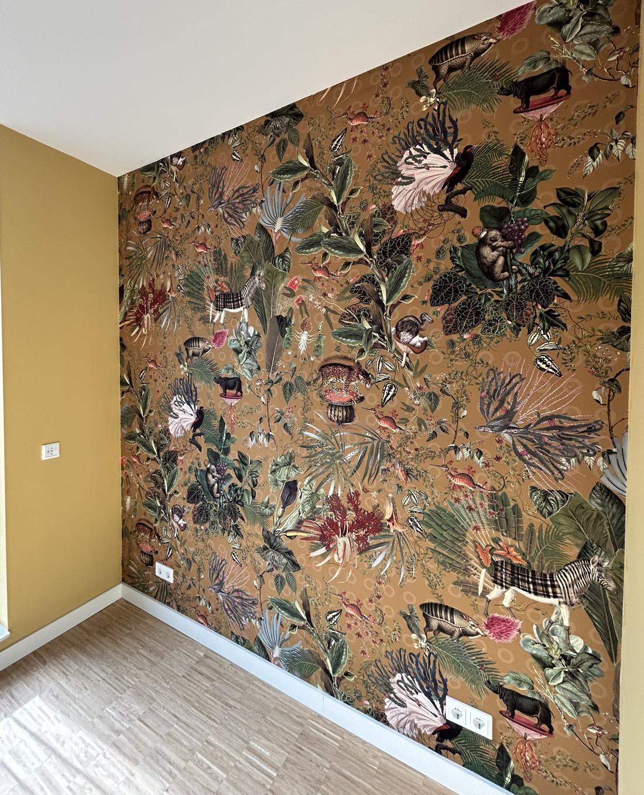
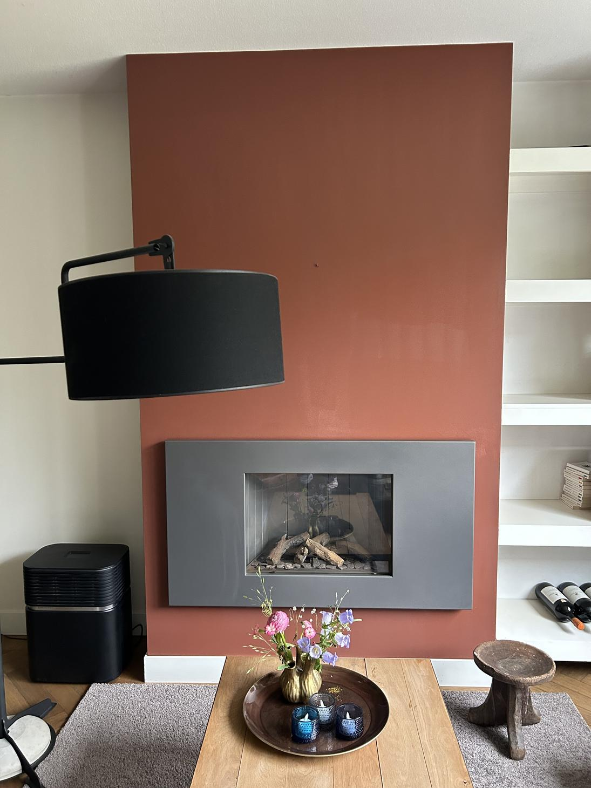
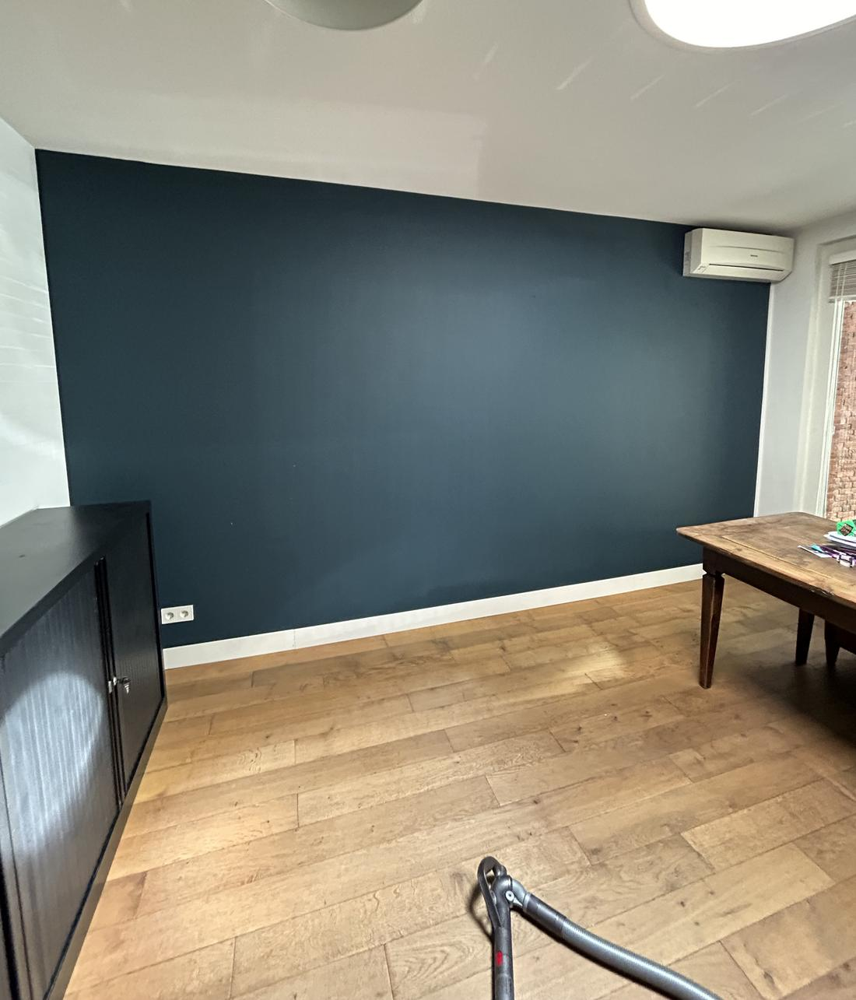
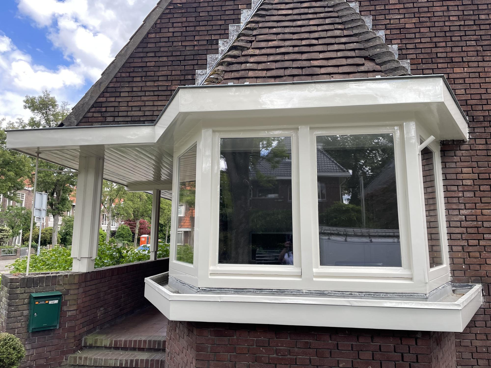

Kies een kleur, zie de muur
Vier klussen uit ons recente werk. Tik op de waaier.
Terracotta op de schouw
Een warme kleur rond de haard, tussen witte kasten.




De complete afwerking
Van het eerste advies over kleur en product tot de laatste laklaag. Voor uw huis of bedrijfspand.
- Binnenschilderwerk
- Buitenschilderwerk
- Wanden en plafonds
- Behangen
- Glasweefsel
- Renovlies
- Deuren en kozijnen lakken
- Radiatoren spuiten
- Kleur- en productadvies
- Herstel na brand of lekkage
Ook buiten strak
Buitenschilderwerk hoort bij het vak, voor huizen en bedrijfspanden.
“Een zeer professioneel schildersbedrijf en vooral betrouwbaar”Ron, klant · 4,8 uit 29 reviews op Google
Denkt meeKlanten noemen het meedenken over kleur en behang.
FlexibelKlanten ervaren de planning als flexibel.
Houdt zich aan afsprakenDat komt terug in de reviews.
Strak witGenoemd bij plafonds en slaapkamers.